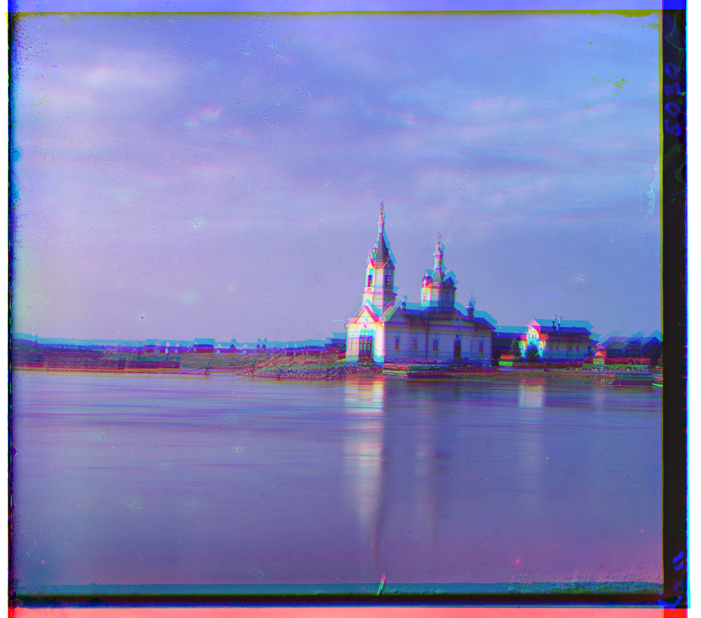

P Background
In 1909 Sergei M. Prokudin-Gorskii photographed scenes across Russia, but shooting the same green, red, and blue filters on a silge glass plate, hoping that in teh future, someone would be able to recombine the three exposures into fully coloured images. This project goes through implementing this very vision!
We take the plates that Prokudin-Gorskii shot into, split the plate into blue, green and red channels, and then explore different processing techniques to create colour photographs.


Single-Scale Alignment
First, naive windowed search on lower resolution JPEGs was explored. This algorithm exhaustivley searches over shifts \((\Delta x,\Delta y)\in[-r,r]^2\) scales with both window size and image area:
\[ T_{\text{single}} \;\approx\; (2r+1)^2 \cdot N \]
where \(N\) is the # of overlapping pixels approx(width × height). Doubling the image resolution or widening the window of course leads to much higher runtimes.
Scoring
NCC (Normalized Cross-Correlation) seek to maximise:
\[ \mathrm{NCC}(A,B) \;=\; \frac{\sum (A-\bar A)(B-\bar B)} {\sqrt{\sum (A-\bar A)^2}\;\sqrt{\sum (B-\bar B)^2}} \]
L2 (sum of squared differences) minimise:
\[ \mathrm{L2}(A,B) \;=\; \sum (A - B)^2 \]
Behind the scenes, a small interior border gets cropped so that the gram artifacts are ingored (as sometimes only a single slide captured light from some bordering region). Then the score for each shift is evaluated and the best is taken \((\Delta x,\Delta y)\) for \(G\!\to\!B\) and \(R\!\to\!B\), then stack to RGB.




After single-scale NCC on the 3 colour channels to align them.